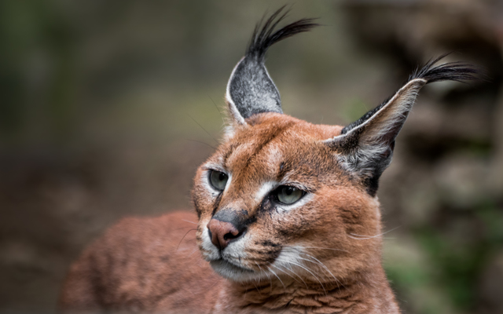
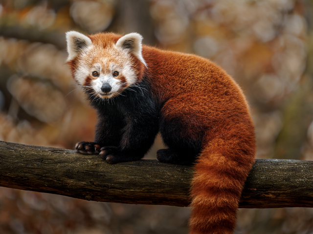

Caracal
Characteristics of a Caracal
The caracal is a slender, moderately sized cat characterised by a robust build, a short face, long canine teeth, tufted ears, and long legs. It reaches nearly 40–50 cm (16–20 in) at the shoulder. The tan, bushy tail extends to the hocks.The caracal is sexually dimorphic; the females are smaller than the males in most bodily parameters.
Red Panda
Etymology of a Red Panda
The name "panda" is thought to have originated from the red panda's local Nepali name पञ्जा pajā "claw" or पौँजा paũjā "paw".In English, it was simply called "panda"; it became known as the "red panda" or "lesser panda" to distinguish it from the giant panda, which was formally described and named in 1869.
Tiger

Taxonomy of a Tiger
In 1758, Carl Linnaeus described the tiger in his work Systema Naturae and gave it the scientific name Felis tigris.In 1929, the British taxonomist Reginald Innes Pocock subordinated the species under the genus Panthera using the scientific name Panthera tigris.